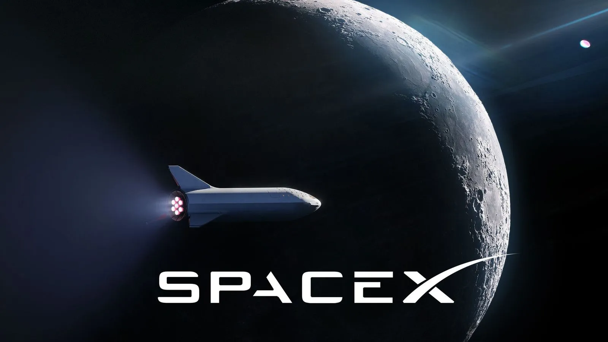
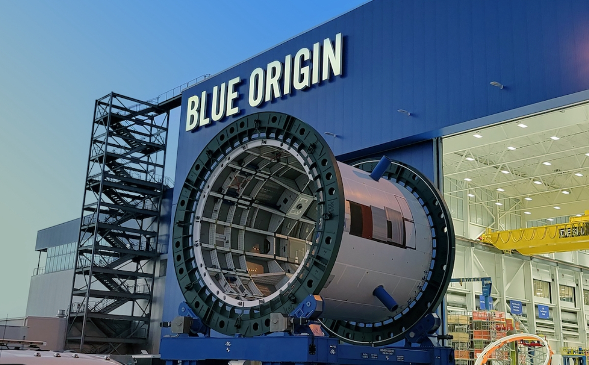
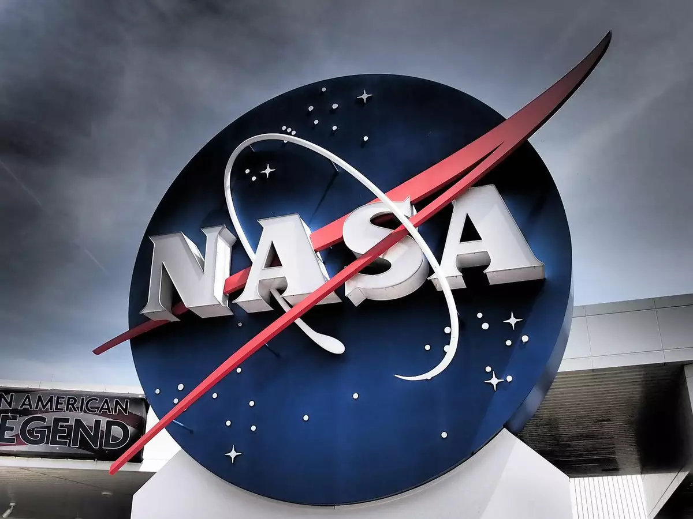
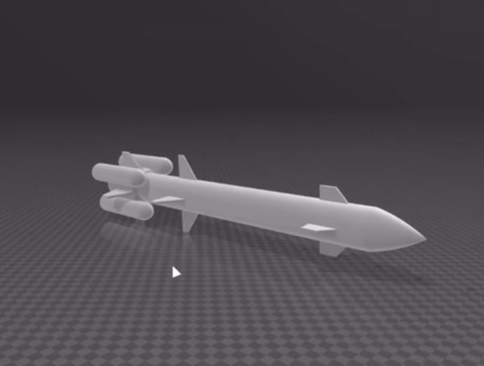
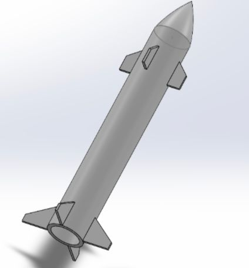

Quem nós somos?
Nós da DKCGI Rocket somos um grupo estudantil da ETEC Profª Maria Cristina Medeiros, estamos com um projeto escolar da matéria de APW (Análise de Projetos Web) onde ao decorrer do curso iremos estudar e trabalhar como os foguetes funcionam. O nossos objetivos são construir um projeto de foguete funcional, conseguir visibilidade em projetos voltados para a área aeroespacial e compartilhar as etapas do projeto e os conhecimentos adquiridos ao decorrer dele.
Integrantes
Carolina Marzinoti Libarino
Meu nome é Carolina Marzinoti Libarino, eu tenho 15 anos e estou no primeiro ano do curso técnico de informática na ETEC Maria Cristina Medeiros. Minha matéria preferida do curso é programação e pretendo seguir nessa área. O projeto DKCGI ROCKET está sendo bem desafiador porém estou gostando dos nossos resultados.
Davi Antônio Ramos Araujo
Eu sou Davi Antônio Ramos Araujo, nascido em Ribeirão Pires - SP. Desde a infância, minha curiosidade pela tecnologia floresceu, impulsionando-me a explorar o campo por conta própria após fazer um curso de informática. Minha busca por conhecimento me levou a me inscrever na ETEC MCM, onde, apesar do método de ensino desafiador, estou adorando a experiência. Meu objetivo é seguir os passos do meu pai e me tornar um engenheiro mecânico, inspirado por sua carreira. Embora os próximos passos ainda não estejam claros, estou comprometido em absorver tudo o que puder para crescer e prosperar na indústria da tecnologia e engenharia. Minha jornada está apenas começando, e estou ansioso para ver onde ela me levará.
Enzo Krebs Silva

Olá, sou Enzo Krebs Silva, um jovem de 15 anos natural de Ribeirão Pires, São Paulo. Desde de mais novo, fui cativado pelo universo da tecnologia, revelando uma insaciável curiosidade por seus segredos. Cresci desmontando e remontando hardwares antigos, desvendando suas engrenagens e imaginando possibilidades além do óbvio. Essa paixão me impulsionou a explorar diversas aplicações e ferramentas, mergulhando fundo em seus meandros e desafiando suas funcionalidades. Minha conexão com a área de tecnologia da informação floresceu quando prestei o exame para ingressar na ETEC Profª Maria Cristina Medeiros, onde embarquei no estimulante curso de T.I. Minha jornada na ETEC tem sido uma incrível aventura de aprendizado. Cada código escrito, cada problema resolvido, solidificam meu desejo de me aprimorar constantemente. A experiência tem sido enriquecedora, e meu comprometimento só cresce. Meu objetivo é aplicar minha paixão e esforço para construir uma carreira notável na área, aproveitando cada oportunidade para me desenvolver como profissional e indivíduo. Estou ansioso para os desafios futuros e as conquistas que virão, enquanto continuo a trilhar meu caminho na vanguarda da tecnologia.
Isabely D'Joliz
Eu sou a Isabely D'joliz, tenho 15 anos, eu estou no ensino médio com Tecnico integrado, e curso TI na ETEC Maria Cristina Medeiros em Ribeirão Pires, onde nasci e cresci. Eu sempre gostei muito de tecnologias no geral, embora eu goste bastante da área de TI e do curso eu ainda não tenho certeza se quero seguir nessa área. Esse projeto está me ajudando a ampliar minhas áreas de conhecimento e a me desafiar cada vez mais.
Guilherme Augusto Pires da Silva

Eu sou o Guilherme Augusto Pires da Silva, tenho 15 anos, eu moro em Guapituba, Parque das Américas e eu estou no ensino médio com Técnico integrado, e curso TI na ETEC Maria Cristina Medeiros em Ribeirão Pires. Pretendo ser técnico na área de t.i, fazendo uma faculdade de engenharia da computação para me aprofundar cada vez mais e atingir minhas metas e sonhos.
Vídeo de Apresentação em Português
Presentation video in English
História dos Foguetes
Os foguetes têm uma história que remonta à antiga China, mas foi no século XX que eles tiveram avanços significativos.

A Guerra Fria impulsionou a corrida espacial entre EUA e União Soviética. Em 1957, os soviéticos lançaram o primeiro satélite artificial, o Sputnik 1, e em 1961, Yuri Gagarin se tornou o primeiro humano a orbitar a Terra. Os EUA responderam com o programa Apollo, que levou astronautas à Lua em 1969.
Se lançamentos de foguetes são comuns e frequentes hoje em dia, é porque eles são resultado da aplicação de princípios que foram vislumbrados, pela primeira vez, há mais de 2.000 anos. Embora os conceitos por trás do funcionamento dos foguetes sejam bastante antigos, foi somente cerca de 70 anos atrás que esses veículos começaram a ser usados em aplicações focadas na exploração espacial. Mas, afinal, quando os foguetes foram criados e como eles funcionam?o
Esses elementos da história de Michael em GTA V contribuem para uma narrativa envolvente e cheia de conflitos emocionais, à medida que ele enfrenta os desafios de conciliar sua vida criminosa anterior com sua busca por uma vida melhor e mais significativa.
Empresas Reconhecidas no ramo da Exploração Aeroespacial
SpaceX
A SpaceX, fundada por Elon Musk em 2002, é uma renomada empresa aeroespacial com sede nos Estados Unidos. Reconhecida por sua inovação e visão audaciosa, a SpaceX tem revolucionado a indústria espacial. Seu principal objetivo é tornar as viagens espaciais mais acessíveis e sustentáveis, por meio do desenvolvimento de foguetes reutilizáveis, como o Falcon 9 e o Falcon Heavy. Além disso, a empresa trabalha na criação de tecnologias para futuras missões interplanetárias, com destaque para o projeto Starship, concebido para possibilitar viagens tripuladas a Marte. Com conquistas como o envio de astronautas à Estação Espacial Internacional e a redução significativa dos custos de lançamento, a SpaceX continua a moldar o futuro da exploração espacial.
Blue Origin
A Blue Origin, fundada por Jeff Bezos em 2000, é uma empresa aeroespacial americana focada na exploração espacial comercial e no desenvolvimento de tecnologias reutilizáveis. Seu principal objetivo é viabilizar o acesso de pessoas e cargas ao espaço, visando à colonização sustentável da Lua e a exploração de outros corpos celestes. A empresa é conhecida pelo desenvolvimento do foguete suborbital New Shepard, projetado para levar turistas e cientistas em voos suborbitais experimentais. Além disso, a Blue Origin trabalha no foguete orbital New Glenn e em tecnologias de propulsão avançada. Seu compromisso com a reutilização e a exploração espacial comercial a coloca como uma figura importante no cenário da exploração espacial contemporânea.
NASA
A NASA, Administração Nacional da Aeronáutica e Espaço dos Estados Unidos, é uma agência governamental dedicada à exploração espacial, pesquisa científica e desenvolvimento tecnológico. Fundada em 1958, a NASA tem sido pioneira em missões espaciais icônicas, como o pouso na Lua com o programa Apollo, e tem contribuído significativamente para avanços científicos e tecnológicos. A agência conduz pesquisas em uma ampla gama de áreas, incluindo astronomia, astrofísica, exploração planetária e climatologia. Além disso, coordena missões tripuladas e não tripuladas, como as sondas espaciais enviadas para estudar planetas, luas e outros corpos celestes. A NASA desempenha um papel vital no entendimento do cosmos e na expansão do conhecimento humano sobre o espaço.
ROSCOSMOS

A ROSCOSMOS, também conhecida como Agência Espacial Federal Russa, é a agência governamental responsável pelo programa espacial da Rússia. Fundada em 1992, a ROSCOSMOS sucedeu à antiga agência espacial soviética e continua a ser uma figura proeminente na exploração espacial global. A agência é responsável pelo lançamento de satélites, missões tripuladas à Estação Espacial Internacional (EEI) e exploração de outros corpos celestes. Seus sucessos notáveis incluem o pioneirismo no envio do primeiro ser humano ao espaço, Yuri Gagarin, e o desenvolvimento das icônicas espaçonaves Soyuz. Além disso, a ROSCOSMOS é uma parceira essencial na EEI e desempenha um papel fundamental na cooperação internacional e na exploração espacial contínua.
Aprofundamento
Propósito do Foguete
O propósito de um foguete é fornecer um meio de transporte para objetos ou seres vivos além da atmosfera terrestre. Os foguetes utilizam a propulsão por meio da queima de combustível para gerar uma enorme quantidade de empuxo, permitindo que eles superem a gravidade e alcancem velocidades suficientes para atingir o espaço.
Utilidades
1- Exploração espacial: Os foguetes são lançados em órbita. E permitem a exploração do espaço, a coleta de dados para estudos avançados
2- Comunicações: Satélites de comunicação são lançados por foguetes e colocados em órbita para fornecer serviços de telecomunicações,
3- Observação e previsão meteorológica: Satélites meteorológicos lançados por foguetes são usados para monitorar a atmosfera da Terra, coletar dados sobre o clima e fornecer previsões meteorológicas mais precisas.
4- Pesquisa científica: Os foguetes também são usados para conduzir pesquisas científicas em diversas áreas da ciência.
5- Aplicações militares: Em certas situações, os foguetes têm aplicações militares, como o lançamento de satélites de reconhecimento, mísseis balísticos e foguetes para defesa aérea. Essas aplicações são direcionadas para fins de segurança nacional e defesa.
Matérias estudadas para desenvolvimento do Projeto
1- Aerodinâmica
2- Design Aeroespacial
3- Engenharia de Foguetes

4- Propulsores e Reagentes Químicos
- Manual do Fogueteiro
- Bounty Breaker
- AeroSpaceGyn>
- TKOR
- E outros materiais avulsos
Fontes consultadas
Modelagem e Propulsores
Modelo
Para realizarmos o projeto, escolhemos como inspiração o foguete Space X Falcon Heavy, estudamos sua aerodinâmica e engenharia e reprojetamos, fazendo diversas mudanças de adaptação.

Aerodinâmica
Para Sua Aerodinâmica escolhemos um bico ogival e aletas nas laterias, assim quebrando a resistência do ar e mantendo uma melhor estabilização durante o lançamento.
Design
Modelo foi projetado no programa SolidWorks e foi dividido em 2 parte:
- Estágio 1: Corpo e Cápsula de Armazenamento 
- Estágio 2: Propulsores

Motor/Propulsor
O que é o Propulsor de um foguete?
O propulsor de um foguete é a parte responsável por gerar a força de propulsão que impulsiona o foguete para frente. É o componente do sistema de propulsão do foguete que produz o impulso necessário para superar a gravidade e alcançar o espaço ou realizar qualquer outra tarefa desejada.
O propulsor geralmente é composto por um ou mais motores de foguete. Esses motores são projetados para queimar combustível e oxidante, liberando gases em alta velocidade através de um bocal de escape. A ação de expelir os gases para trás gera uma reação que empurra o foguete para frente, de acordo com a terceira lei de Newton, conhecida como princípio da ação e reação.
Existem diferentes tipos de propulsores utilizados em foguetes, como propulsores de combustível sólido, propulsores de combustível líquido e propulsores híbridos. Cada tipo tem suas próprias características e requisitos de projeto.
Tipos de propulsores de Foguetes:
Existem diferentes tipos de propulsores utilizados em foguetes, sendo eles:
Propulsor de combustível sólido: É um tipo de propulsor em que o combustível e o oxidante estão misturados em um sólido compacto. Geralmente, é composto por uma combinação de pólvora, nitrato de potássio e outros ingredientes. O propulsor de combustível sólido é relativamente simples de usar, pois não requer sistemas de alimentação complexos.
Propulsor de combustível líquido: Nesse tipo de propulsor, o combustível e o oxidante são armazenados separadamente em tanques. Durante a queima, eles são injetados e misturados em uma câmara de combustão. Os combustíveis líquidos comuns incluem o querosene e o hidrogênio, enquanto o oxidante geralmente é o oxigênio líquido. Propulsores de combustível líquido são mais complexos de manusear devido aos sistemas de alimentação e controle necessários.
Propulsor híbrido: É uma combinação dos propulsores de combustível sólido e líquido. Nesse tipo, um dos componentes (geralmente o combustível) é sólido, enquanto o outro (oxidante) é líquido. A queima ocorre quando o oxidante líquido é injetado no combustível sólido. Propulsores híbridos oferecem uma combinação de simplicidade de uso e controle em comparação com os propulsores líquidos.
Propulsor de água e ar comprimido: Em foguetes de baixa potência e projetos escolares, também é comum usar água e ar comprimido como propulsores. O foguete é impulsionado pela liberação rápida da pressão gerada pela combinação da água e do ar comprimido. Essa abordagem é mais segura e acessível para experimentos amadores.
Propulsor Propelente
O modelo de propulsor escolhido para o nosso projeto foi o propelente, isto é, um propulsor a base de um combustível e um oxidante sólidos. Utilizaremos uma mistura de Nitráro de potássio (combustível) e açúcar (oxidante) que criará um tipo de massa que quando entra em combustão, libera um quantidade alta de CO2 fazendo assim o foguete decolar e alcançar altitudes acima dos 50 metros de altura.
Materias necessários:
- 5 colheres de nitrato de potássio (KNO3)
- 2 colheres de alçúcar refinado
- 1 Cano PVC de 25 mm de diâmetro e 7 cm de comprimento
- 2 Cap's (tampas) de 25 mm de diâmetro
- 1 Tubo de cola instantânea
- 1 cilindro com no máximo 1/3 da circunferência do cano
- 1 frigideira ou panela
- 10 cm de fio de estopim
- Acesso a um fogão
Passo a Passo
- KNO3 + Açúcar na frigideira até virar uma espécie de caramelo
- Colocar a mistura dentro do cano com ajuda do cilindro, deixando um buraco no meio
- Tampe um dos lados do cano com o primeiro cap
- Vede esse lado com a cola instantânea
- Corte um buraco de 10 mm de diâmetro no centro do segundo cap
- Tampe o outro lado do cano com o cap cortado
- Coloque 10 cm de fio de estopim dentro do cano através do buraco no cap